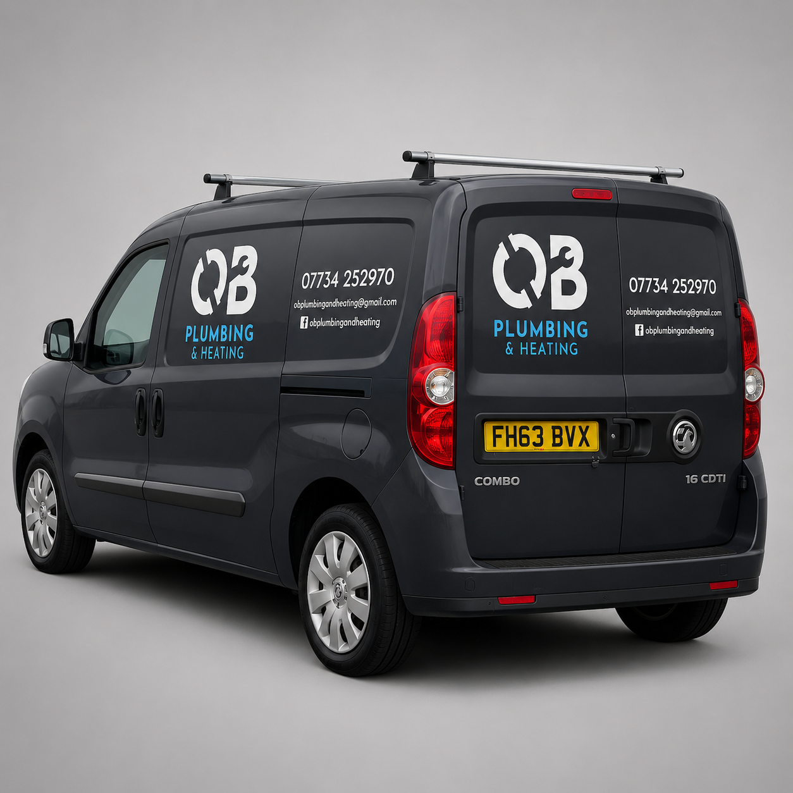

Digital Designer | UX/UI | Branding & Web Design
Digital Designer creating websites, brands & digital experiences.
Digital designer with 10+ years of experience creating websites, brands and digital experiences for organisations of all sizes, from growing businesses to major infrastructure and public sector projects.

About
With 10+ years of experience in digital design, I create websites, visual identities and user-focused digital experiences for public and private sector organisations. My work spans web design, branding, UX/UI and digital communications, helping organisations communicate clearly and effectively online.
My background combines design, user experience, content strategy and a practical understanding of front-end technologies, allowing me to bridge the gap between creative concepts and their implementation.
Work

Heathrow West
Designed and built the Heathrow West website in WordPress while at Copper Consultancy, communicating a major infrastructure project through clear content and intuitive user journeys.
Visit Website →
Prep and Coat
Developed the Prep & Coat brand identity and designed a Shopify ecommerce website, with ongoing support including website maintenance, SEO content and email marketing.
Visit Website →
Vattenfall
Designed and developed the Bristol Heat Network website in WordPress while at Copper Consultancy, translating complex energy information into an accessible digital experience.
Visit Website →
Bristol City Leap
Designed a print-ready welcome pack for the Bristol City Leap programme while at Copper Consultancy, using illustration and information design to communicate energy-saving measures and customer journeys.
Visit Project →
Beacon Solar Farm
Designed and built the Beacon Solar website in WordPress while at Copper Consultancy, translating existing brand guidelines into an engaging digital experience for a proposed solar energy project.
Visit Project →
RSK Group
Designed the visual identity for RSK Connect, the organisation's intranet platform, and created digital communications assets, including a motion graphics video promoting sustainability and renewable energy initiatives.
View Case Study →
Type One Style
Led a full company rebrand and improved the Shopify customer experience through design, content and digital marketing initiatives, helping drive a 523% increase in revenue.
View Case Study →
Bathroom Bay
Designed the Bathroom Bay brand identity, creating a modern visual system that has since been applied across vehicles, workwear and marketing materials.
View Case Study →
OB Plumbing & Heating
Designed a complete brand identity for OB Plumbing & Heating, including a custom logo, visual system and promotional assets for print and social media.
View Case Study →Experience
Copper Consultancy
Web Designer & Creative Services Manager · 2024–Present
Led the design and development of WordPress websites, brand identities and stakeholder communications for major renewable energy and infrastructure projects. Alongside project delivery, I managed a 14-person design and development team, supporting planning, resourcing and client engagement.
Studio Evans
Freelance Web Designer & Digital Consultant · 2016–Present
Provide freelance digital design services for clients across a range of industries, delivering websites, visual identities and digital marketing assets from concept through to launch. Projects include WordPress and Shopify websites, branding, content creation and ongoing digital support.
RSK Group
Digital Designer · 2022–2024
Designed and delivered digital content, website assets and email marketing campaigns for multiple RSK Group business units, helping maintain consistent brand experiences across a diverse portfolio of businesses.
Type One Style
Head of Design · 2021–2022
Led a full company rebrand and improved the Shopify customer experience through design, content and digital marketing initiatives, helping drive a 523% increase in revenue.
mmunic
Digital Designer · 2020–2021
Led the company rebrand and corporate website redesign, while delivering email marketing campaigns and digital assets for major retail brands including Booker, Makro and Londis.
Sizzix
Web & Print Designer · 2019–2020
Supported the Sizzix brand refresh through the creation of digital and print marketing assets, including packaging, website content and campaign materials. Introduced animated content into email and web campaigns to enhance customer engagement.
Digitally Disruptive
Junior Graphic Designer · 2018–2019
Promoted within three months in recognition of strong performance and development. Managed client projects and delivered a range of digital and print marketing materials, including a 140-page commercial brochure that contributed to increased sales and engagement.
View Creative Agency
Internship · 2014
Completed a design internship within a creative marketing agency, supporting branding and packaging projects. Contributed concepts to the redesign of Llaeth Y Llan packaging, including the Welsh blanket motif featured in the final design.
Testimonials
"He produced numerous commercially-perfect website concepts, digital campaign adverts and print collateral for some of the biggest brands in the UK."
Samuel Sutton
Digitally Disruptive"George helped bring my company vision to life. I'm exceptionally happy with his design services and definitely won't be going to anyone else."
Jon O'Brien
OB Plumbing & Heating"George is an absolute pleasure to work with. He is undoubtedly the most experienced graphic designer and web designer I have worked with."
Danielle Davies
Bathroom Bay"George is highly competent at front-end Shopify theme customization and branding work, and can quickly generate a bank of formatted assets."
Charlie Cawsey
Type One Style"I had the pleasure of working with George for six months, and in that time his commitment to creating excellent, engaging designs and enhancing his skills, knowledge and experience to benefit our clients has shone through."
Charlotte Girow
mmunicMail"George has an incredible energy that he brings to the team including an abundance of creative ideas that he brings to life through well-thought-through conceptual designs."